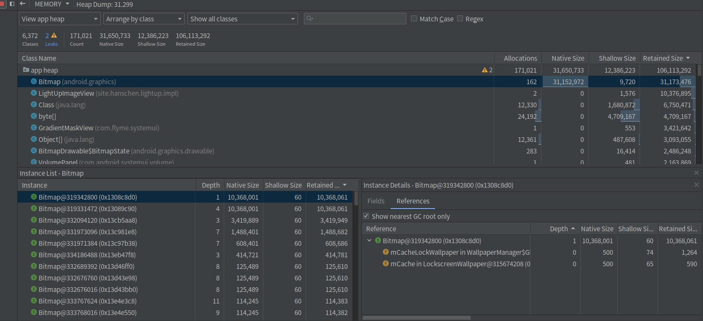

概述
在内存优化前我们有必要借助一些工具来查看我们的 APP 目前使用内存的状况，为我们内存优化指明方向。
Android 中关于的工具很多，参考下表。所以我们要灵活地选用我们需要的工具。在定位内存问题的过程中，推荐使用涵盖一定初步定位和定位能力的工具，可以让我们一步到位地剖析问题、提升效率。
| 工具 | 分析问题 | 能力 | 备注 |
|---|---|---|---|
| top/procrank | 内存占用过大，内存泄漏 | 发现 | |
| showmap | |||
| meminfo | |||
| gfxinfo | 查看hwui所占用的内存，对应meminfo里面的gl、egl | adb shell dumpsys gfxinfo |
|
| dmabug_dump | 分析ION内存 | ||
| StrickMode | Activity 内存泄漏 | 自动发现+初步定位 | |
| LeakCanary | Activity 内存泄漏 | 自动发现+定位 | |
| Systrace | GC导致的卡顿 | 发现 | |
| Memory Monitor/Memory Profiler | 申请内存大小和时间 | 发现 | Android Studio 3.0 采用全新的 Android Profiler 窗口取代 Android Monitor 工具。 |
| HeapViewer | 查看APP内存分配大小和空闲内存大小 | 发现 | |
| Allocation Tracker | 申请内存次数过多和多大，辅助定位GC log发现的问题 | 发现+定位 | |
| Android Lint | 内存优化建议 | 发现+定位 | |
| MAT | 内存泄漏 | 发现+定位 |
getprop
我们可以使用 adb shell getprop |grep vm 来看 Android 虚拟机对内存的一些配置：
[dalvik.vm.heapgrowthlimit]: [256m]
[dalvik.vm.heapsize]: [512m]
dalvik.vm.heapgrowthlimit 表示受控情况下每个进程可用的最大堆内存。dalvik.vm.heapsize 表示 设置了 android:largeHeap="true" 的应用可以使用的最大堆内存。
procrank
需要root权限才能运行
bogon:TestSomething heqiang$ adb shell procrank
PID Vss Rss Pss Uss cmdline
18283 1730504K 375064K 263512K 247516K com.android.browser
3030 2947812K 412340K 166613K 110032K system_server
3224 2918272K 245324K 114479K 98196K com.android.systemui
3880 2676696K 232392K 113036K 105568K com.meizu.safe
5198 1976632K 201196K 85256K 44832K com.tencent.mm
7982 1916864K 182152K 79986K 75428K com.android.mms
......
------ ------ ------
2174242K 1731360K TOTAL
RAM: 5825640K total, 384368K free, 101036K buffers, 2805404K cached, 16472K shmem, 541972K slab
输出结果是按照 PSS 值从大到小进行排列的。
- VSS：Virtual Set Size 虚拟耗用内存（包含共享库占用的内存，以及分配但未使用内存）是单个进程全部可访问的地址空间，VSS 很少被用于判断一个进程的真实内存使用量。
- RSS：Resident Set Size 实际使用物理内存（包含共享库占用的内存）是单个进程实际占用的内存大小，对于单个共享库， 尽管无论多少个进程使用，实际该共享库只会被装入内存一次。所以RSS并不能准确反映单进程的内存占用情况 。
- PSS：Proportional Set Size 实际使用的物理内存（比例分配共享库占用的内存）
- USS：Unique Set Size 进程独自占用的物理内存（不包含共享库占用的内存）USS 是一个非常非常有用的数字， 因为它揭示了运行一个特定进程的真实的内存增量大小。如果进程被终止， USS 就是实际被返还给系统的内存大小。
USS 是针对某个进程开始有可疑内存泄露的情况，进行检测的最佳数字。怀疑某个程序有内存泄露可以查看这个值是否一直有增加。
这些内存指标都是包含 Java 内存和 Native 内存的。
一般来说内存占用大小有如下规律：VSS >= RSS >= PSS >= USS
showmap
showmap 的数据其实是解析 smaps 的数据，会展示当前进程文件的内存占用，功能与 /proc/<PID>/smaps 基本一致。
adb shell showmap -a <pid> 查看一个进程的showmap，这对于我们来说非常有用，可以确定进程中哪些库占用内存比较多。
- start addr 和 end addr ：分别代码进程空间的起止虚拟地址。
- virtual size/RSS/PSS：前面介绍过
- shared：共享数据。
- private：该进程私有数据。
- clean：干净数据，是指该内存数据与disk数据一致，当内存紧张时，可以直接释放内存，不需要写到disk
- dirty：脏数据，与disk数据不一致，需要先写回到disk，才能被释放。
dumpsys meminfo
可以使用 adb shell dumpsys meminfo 来看系统内所有进程的内存使用情况：
Applications Memory Usage (in Kilobytes):
Uptime: 3915314 Realtime: 3950084
Total RSS by process:
524,336K: system (pid 1117)
445,240K: com.android.systemui (pid 17043)
......
Total RSS by OOM adjustment:
3,059,892K: Native
179,708K: zygote64 (pid 760)
159,160K: zygote (pid 761)
......
Total RSS by category:
3,307,236K: .so mmap
1,637,356K: Native
1,605,492K: .jar mmap
......
Total PSS by process:
288,965K: com.android.systemui (pid 17043)
256,555K: system (pid 1117)
......
Total PSS by OOM adjustment:
819,647K: Native
79,490K: logd (pid 617)
61,451K: android.hardware.camera.provider@2.4-service_64 (pid 896)
.....
Total RAM: 7,791,836K (status normal)
Free RAM: 3,359,799K ( 209,011K cached pss + 2,498,404K cached kernel + 652,384K free)
ION: 183,008K ( 18,008K mapped + 165,000K unmapped + 0K pools)
Used RAM: 4,059,695K (2,771,419K used pss + 1,288,276K kernel)
Lost RAM: 372,330K
ZRAM: 12K physical used for 0K in swap (4,194,300K total swap)
Tuning: 256 (large 512), oom 322,560K, restore limit 107,520K (high-end-gfx)
ION:
我们可以使用下面的命令来查看某个进程使用内存的情况：
adb shell dumpsys meminfo -a <进程名称>
输出结果：
Applications Memory Usage (in Kilobytes):
Uptime: 638409159 Realtime: 1205461779
** MEMINFO in pid 8118 [com.android.hq.ganktoutiao] **
Pss Pss Shared Private Shared Private SwapPss Heap Heap Heap
Total Clean Dirty Dirty Clean Clean Dirty Size Alloc Free
------ ------ ------ ------ ------ ------ ------ ------ ------ ------
Native Heap 18071 0 640 18004 0 0 18 29696 22848 6847
Dalvik Heap 3992 0 196 3972 0 0 23 6443 3222 3221
Dalvik Other 1600 0 16 1600 0 0 0
Stack 120 0 0 120 0 0 0
Ashmem 2 0 4 0 8 0 0
Gfx dev 14500 0 0 11136 0 3364 0
Other dev 19 0 108 0 0 16 0
.so mmap 9349 6092 1072 420 14984 6092 31
.jar mmap 8 0 0 8 0 0 0
.apk mmap 227 100 0 0 1388 100 0
.ttf mmap 258 192 0 0 188 192 0
.dex mmap 11583 9716 0 4 8008 9716 0
.oat mmap 379 80 0 0 2568 80 0
.art mmap 5942 248 324 5344 5232 248 4
Other mmap 2603 0 16 4 3076 1708 0
EGL mtrack 27744 0 0 27744 0 0 0
GL mtrack 28956 0 0 28956 0 0 0
Unknown 1469 0 280 1420 0 0 4
TOTAL 126902 16428 2656 98732 35452 21516 80 36139 26070 10068
Dalvik Details
.Heap 3528 0 0 3528 0 0 0
.LOS 156 0 8 156 0 0 20
.Zygote 236 0 188 216 0 0 3
.NonMoving 72 0 0 72 0 0 0
.LinearAlloc 320 0 0 320 0 0 0
.GC 84 0 12 84 0 0 0
.JITCache 1088 0 0 1088 0 0 0
.IndirectRef 108 0 4 108 0 0 0
.Boot vdex 8099 6236 0 0 8008 6236 0
.App dex 1036 1032 0 4 0 1032 0
.App vdex 2448 2448 0 0 0 2448 0
.App art 1092 8 0 1084 0 8 0
.Boot art 4850 240 324 4260 5232 240 4
App Summary
Pss(KB)
------
Java Heap: 9564
Native Heap: 18004
Code: 16612
Stack: 120
Graphics: 71200
Private Other: 4748
System: 6654
TOTAL: 126902 TOTAL SWAP PSS: 80
Objects
Views: 593 ViewRootImpl: 2
AppContexts: 2 Activities: 1
Assets: 4 AssetManagers: 3
Local Binders: 17 Proxy Binders: 25
Parcel memory: 5 Parcel count: 23
Death Recipients: 3 OpenSSL Sockets: 1
WebViews: 0
Dalvik
isLargeHeap: false
SQL
MEMORY_USED: 165
PAGECACHE_OVERFLOW: 24 MALLOC_SIZE: 117
DATABASES
pgsz dbsz Lookaside(b) cache Dbname
4 24 59 2/17/3 /data/user/0/com.android.hq.ganktoutiao/databases/gank.db
Asset Allocations
zip:/data/app/com.android.hq.ganktoutiao-jidQh1vu54x_dgItu-668g==/base.apk:/assets/fonts/material-design-iconic-font-v2.2.0.ttf: 97K
现在对上面输出内容的各项指标来做个解释：
横轴指标：
- Pss Total
- Pss Clean
- Shared Dirty
- Private Dirty
- Shared Clean
- Private Clean
- Swap Dirty
- Rss Total
我们需要重点关注下面信息：
Private (Clean and Dirty) RAM：这只是你的进程正在使用的内存。 这是当您的应用程序的进程被销毁时系统可以回收的大部分RAM。 一般来说，最重要的部分是private dirty RAM，这是最昂贵的，因为它仅由您的进程使用，其内容仅存在于RAM中，因此无法分页到存储（因为Android不使用交换）。 您所做的所有Dalvik和本机堆分配将是private dirty RAM; 您与Zygote进程共享的Dalvik和本机分配是shared dirty RAM。
Proportional Set Size (PSS)：这是您的应用程序的RAM使用量的衡量标准，它考虑到跨进程共享页面。 任何对您的过程唯一的RAM页面直接有助于其PSS值，而与其他进程共享的页面仅与共享的数量成比例地贡献PSS值。 例如，两个进程之间共享的页面将为每个进程的PSS贡献一半的大小。 PSS测量的一个很好的特点是您可以将所有进程的PSS相加，以确定所有进程正在使用的实际内存。 这意味着PSS对于进程的实际RAM权重和与其他进程的RAM使用以及总可用RAM进行比较是一个很好的衡量标准。
纵轴指标：
- Native Heap：Native 分配的内存，就是非 Java 代码分配的内存。不受Java Object Heap大小限制，但受限于系统内存。
- Dalvik Heap：Java对象分配的占据内存。
- Dalvik Other：类数据结构和索引占据内存
- Stack：栈内存
- Ashmem：匿名共享内存
- Other dev：内部driver占用的内存
- .so mmap：so库占用的内存
- .apk mmap：apk占用的内存
- .ttf mmap：ttf文件占用过的内存
- .dex mmap：
- .oat mmap：基于多个应用程序通常使用的预加载类的代码映像所使用的内存。在所有应用程序之间共享，不受特定应用程序的影响。
- .art mmap：
- Other mmap
- App Summary：
- Java Heap：从 Java 或 Kotlin 代码分配的对象内存。(dalvik heap + .art mmap)
- Native Heap：从 C 或 C++ 代码分配的对象内存。不受Java Object Heap大小限制，但受限于系统内存。当然如果 RAM 快耗尽，memory killer 就会杀进程释放 RAM。
- Code：您的应用用于处理代码和资源（如 dex 字节码、已优化或已编译的 dex 码、.so 库和字体）的内存(.so mmap + .jar mmap + .apk mmap + .ttf mmap + .dex mmap + .oat mmap)。
- Stack：您的应用中的原生堆栈和 Java 堆栈使用的内存。 这通常与您的应用运行多少线程有关。
- Graphics：图形缓冲区队列向屏幕显示像素（包括 GL 表面、GL 纹理等等，也就是GPU绘制时用的一些Buffer等）所使用的内存。 （请注意，这是与 CPU 共享的内存，不是 GPU 专用内存。）看代码中有没有直接调用opengl，如果没有可以忽略，那就主要是framework创建的。(Gfx dev + EGL mtrack + GL mtrack)
- Private Other:(TotalPrivateClean + TotalPrivateDirty - java - native - code - stack - graphics)
- System: 共享库，系统共享资源比如jar包，aar包，动态加载的apk，图像字体等(TotalPss - TotalPrivateClean - TotalPrivateDirty)
对于应用的内存，一般我们主要关注 App Summary 就行了。
进程空间中的 heap 空间是我们需要重点关注的，heap 空间完全由程序员控制，我们使用的 malloc、C++ new 和 java new 所申请的空间都是 heap 空间， 其中 C/C++ 申请的内存空间在 native heap 中，而 java 申请的内存空间则在 dalvik heap中。
执行这部分输出的代码主要在 ActivityThread.dumpMemInfoTable()，如果我们对某一部分的数据不是太了解，那么可以查看这部分代码来了解一下。比如针对 App Summary 这一块：
pw.println(" App Summary");
printRow(pw, TWO_COUNT_COLUMN_HEADER, "", "Pss(KB)", "", "Rss(KB)");
printRow(pw, TWO_COUNT_COLUMN_HEADER, "", "------", "", "------");
printRow(pw, TWO_COUNT_COLUMNS,
"Java Heap:", memInfo.getSummaryJavaHeap(), "", memInfo.getSummaryJavaHeapRss());
printRow(pw, TWO_COUNT_COLUMNS,
"Native Heap:", memInfo.getSummaryNativeHeap(), "",
memInfo.getSummaryNativeHeapRss());
printRow(pw, TWO_COUNT_COLUMNS,
"Code:", memInfo.getSummaryCode(), "", memInfo.getSummaryCodeRss());
printRow(pw, TWO_COUNT_COLUMNS,
"Stack:", memInfo.getSummaryStack(), "", memInfo.getSummaryStackRss());
printRow(pw, TWO_COUNT_COLUMNS,
"Graphics:", memInfo.getSummaryGraphics(), "", memInfo.getSummaryGraphicsRss());
printRow(pw, ONE_COUNT_COLUMN,
"Private Other:", memInfo.getSummaryPrivateOther());
printRow(pw, ONE_COUNT_COLUMN,
"System:", memInfo.getSummarySystem());
printRow(pw, ONE_ALT_COUNT_COLUMN,
"Unknown:", "", "", memInfo.getSummaryUnknownRss());
pw.println(" ");
if (memInfo.hasSwappedOutPss) {
printRow(pw, THREE_COUNT_COLUMNS,
"TOTAL PSS:", memInfo.getSummaryTotalPss(),
"TOTAL RSS:", memInfo.getTotalRss(),
"TOTAL SWAP PSS:", memInfo.getSummaryTotalSwapPss());
} else {
printRow(pw, THREE_COUNT_COLUMNS,
"TOTAL PSS:", memInfo.getSummaryTotalPss(),
"TOTAL RSS:", memInfo.getTotalRss(),
"TOTAL SWAP (KB):", memInfo.getSummaryTotalSwap());
}
大部分都是执行 Debug.MemoryInfo 的方法来获取的数据。
public int getSummarySystem() {
return getTotalPss()
- getTotalPrivateClean()
- getTotalPrivateDirty();
}
public int getTotalPss() {
return dalvikPss + nativePss + otherPss + getTotalSwappedOutPss();
}
public int getTotalRss() {
return dalvikRss + nativeRss + otherRss;
}
public int getTotalUss() {
return dalvikPrivateClean + dalvikPrivateDirty
+ nativePrivateClean + nativePrivateDirty
+ otherPrivateClean + otherPrivateDirty;
}
public int getTotalPrivateDirty() {
return dalvikPrivateDirty + nativePrivateDirty + otherPrivateDirty;
}
public int getTotalSharedDirty() {
return dalvikSharedDirty + nativeSharedDirty + otherSharedDirty;
}
public int getTotalPrivateClean() {
return dalvikPrivateClean + nativePrivateClean + otherPrivateClean;
}
public int getTotalSharedClean() {
return dalvikSharedClean + nativeSharedClean + otherSharedClean;
}
ViewRootImpl：在您的进程中活动的根视图数。 每个根视图与一个窗口相关联，因此这可以帮助您识别涉及对话框或其他窗口的内存泄漏。
AppContexts and Activities：当前存在于您的进程中的应用程序上下文和活动对象的数量。 这可以帮助您快速识别由于静态引用而无法收集的泄漏的Activity对象，这是常见的。 这些对象通常具有与它们相关联的许多其他分配，这使得它们成为跟踪大内存泄漏的好方法。
Memory Profiler
Android 官方文档：使用 Memory Profiler 查看 Java 堆和内存分配
介绍一下抓 heap profile 的几种方法：
1.通过 AndroidStudio 自带的Profiler工具，参考上文。
2.adb shell am dumpheap <进程名>，这时输出文件放在手机的/data/local/tmp/heapdump-20230208-222151.prof，这时可以把prof后缀直接修改为hprof。另外还可以指定输出文件：adb shell am dumpheap 进程名 /sdcard/test.hprof.
3.通过代码调用Debug.dumpHprofData()获取当前应用的heap。
如果使用命令行抓取的文件是prof文件，需要重命名成hprof后缀才能用 Memory Profiler 来查看内存。
比如如果native内存占用过高，我们可以通过查看 Bitmap 对象是否存在大内存的对象。在 app heap 点击 Bitmap 后下面会列举出所有的 Bitmap对象以及他们占用内存的大小，点击某个对象后，右边还会给出那些引用持有这些对象，然后我们就可以分析这些对象是否有存在的必要，是否存在没有及时清理的情况。 
Mat
参考
《Android 移动性能实战》